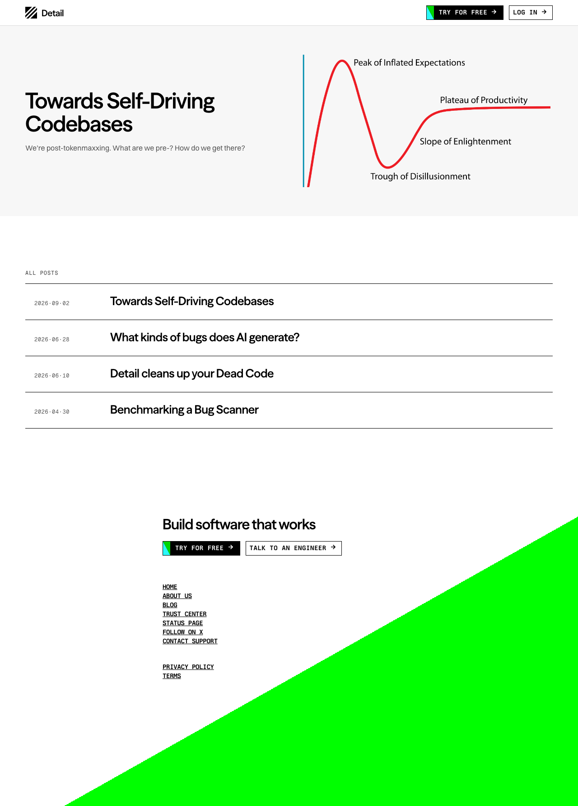
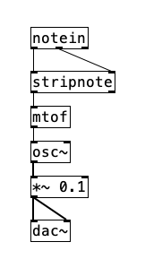
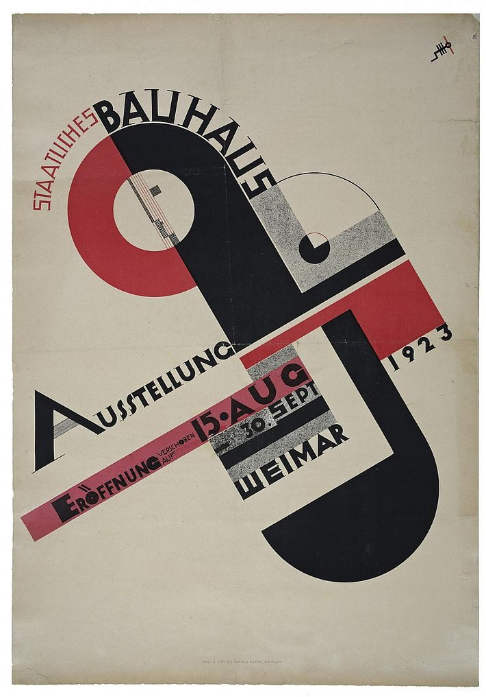
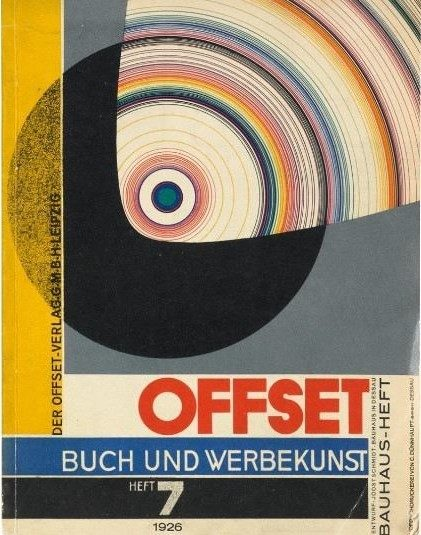
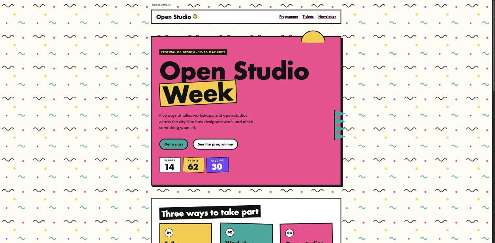
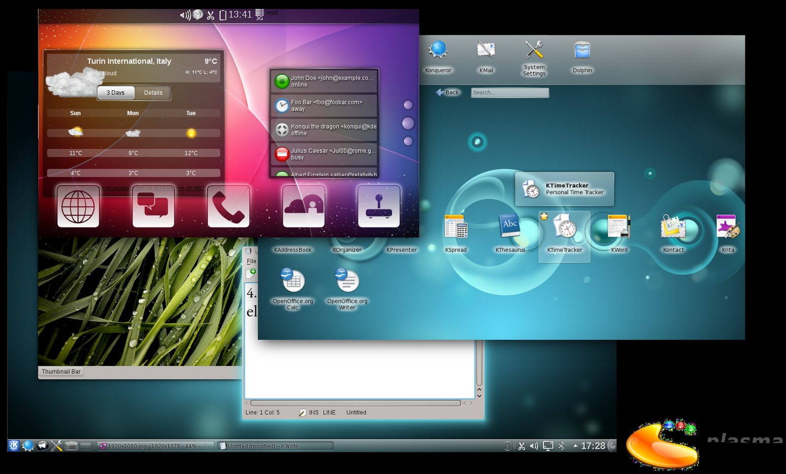
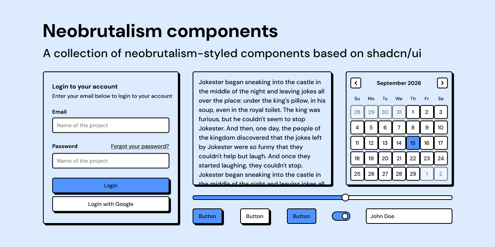
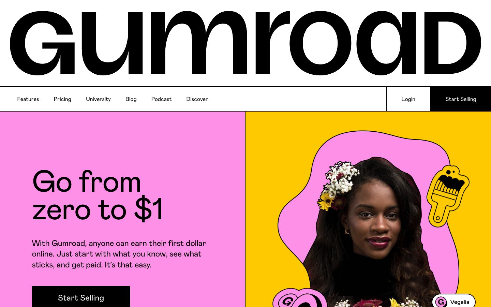

01 / STYLE COLLECTION
Minimalist Machine
Visible structure. Precise type. Interfaces that feel like instruments.
Explore the collection →

A working collection / 006
Websites, tools, printed works, and objects, collected by the mood they create and the ideas worth carrying forward.
6 collections · 60 references
Visible structure. Precise type. Interfaces that feel like instruments.
Explore the collection →

Grids, sans-serif type, and objective images. Order as the message.
Explore the collection →

Primary colors, basic shapes, and bold bars. Form follows the workshop.
Explore the collection →

Clashing color, laminate patterns, and toy-like geometry. Postmodern play.
Explore the collection →
Glass, water, sky, and gloss. Optimistic technology from the mid-2000s.
Explore the collection →
Thick outlines, hard shadows, and loud flat color. Interfaces that look built.
Explore the collection →

Each reference records what makes it useful, where it came from, and how it relates to a style. The notes matter as much as the image.
Browse all references →A reference can sit in more than one style. Websites, product interfaces, printed works, objects, and single images share the same record.
How to add a reference →